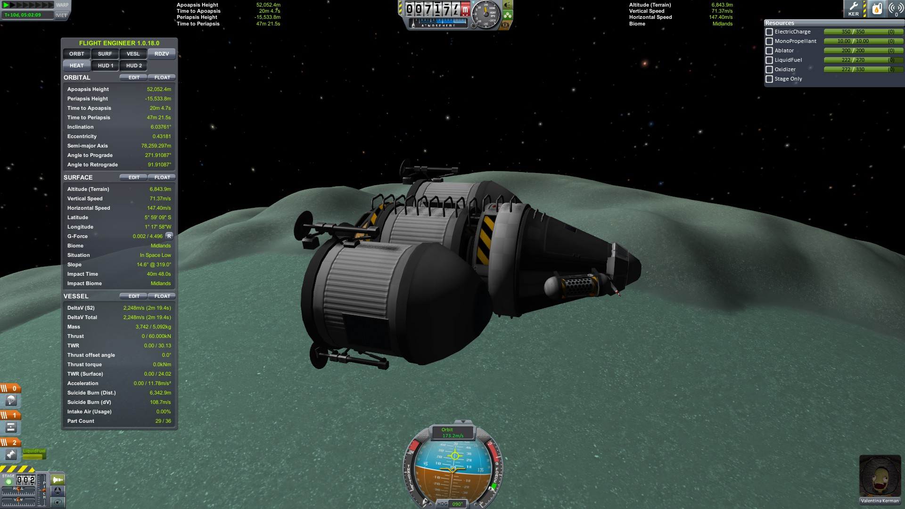
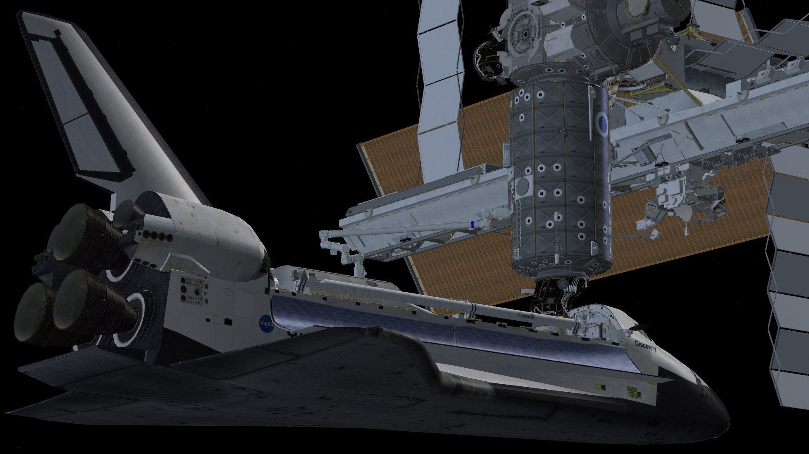

OrbiterとKerbal Space Program
この記事は、旧ブロマガにて2015年4月に書かれたものです。
OrbiterとKSPのつながり
Kerbal Space Programがアーリーアクセスを脱して1.0になったとのこと。
何はともあれ、まずはおめでとうございます。
まあそんなわけで、今回はあまり知られていない「OrbiterとKSPのつながり」について書いてみます。
話をしよう
あれは今から36万・・・
いや、2011年6月24日のことだったか。
KSPが初めて一般にリリースされたその日、Orbiterの公式フォーラムにKerbal Space Programと題したスレッドが立ちました。
Orbiter公式フォーラムのKSPスレッド
Gaming The Kerbal Space Program - Version 1.00.x - Orbiter-Forum
KSP作者「新しいゲームを作ったよ！
レゴみたいにロケットを組み立てて飛ばすゲームなんだ。」
Orbiter民「何これ面白い！」
Orbiter民「ぜんぜん高度が上がらないんだけど…」
Orbiter民「誰が一番高くまで飛べるか競争しようぜ！」
KSPの作者（少なくともそのうちの一人）はOrbiterのプレイ経験があり、リリースのかなり初期から公式フォーラムでOrbiterのプレイヤーと積極的に交流していました。
Orbiter民「SAS使用時に、Tキーを押しっぱなしにするのがだるい…」
KSP作者「一回押すだけでオン／オフを切り換えられるようにしたよ！」
Orbiterのプレイヤーから、有益なフィードバックがもたらされることもありました。
現在に至るまで、KSPの作者とOrbiterのプレイヤーのあいだでは交流が続いています。
ここで、最初のリリース当時のKSP作者の言葉を引用してみましょう。
This game is not meant to compete with Orbiter, mind... that wouldn't be a good idea anyway, to compete with a freeware simulator with 12 years of development on it... This is meant to be a different take on space games, it's not a full blown space sim, but it's not your average space shooter either. At best, I hope this can be a stepping stone for people to get into Orbiter. At worst, I hope it's at least somewhat entertaining.
このゲームをOrbiterのライバルにするつもりはないよ…12年も開発が続いてるフリーウェアのシミュレータと競争するなんて無茶だしね。このゲームはちょっと違う種類の宇宙ゲームにするつもりなんだ。本格的な宇宙シムではないし、よくある宇宙物のシューティングゲームにするつもりもない。できれば、このゲームがOrbiterを始めるきっかけになればいいかなって思ってる。最低でも、何か楽しめるものを作るつもりさ。
言うまでもなく、現在のKSPはOrbiterの「きっかけ」に留まるようなゲームではないわけですが、ここで両者の違いを簡単にまとめてみたいと思います。
KSPは「何でも作れる」タイプのゲームです。
宇宙船に限らず、航空機や車両なども作ることができますが、「ロケットを飛ばす」というのがKSPの基礎にあると思います。
液体燃料と固体燃料ロケットの違い、多段式ロケットの必要性、より効率のよいロケットとは何か、を楽しみながら簡単に学ぶことができます。
一方で、我々の太陽系に比べて惑星が小さく設定されていたり、物理モデルがやや簡略化されていたりします。

一方のOrbiterは「操縦とフライトプランの作成を楽しむ」タイプのゲームです。
コクピットのボタンを押して宇宙船を操縦できるほか、各種データを確認するためのツールが非常に充実しており、より複雑なフライトを体験することができます。
物理モデルも比較的よくできており、忠実に再現された太陽系で、実在するミッションをそれなりに再現することができます。
ただし、MODを導入しなければ、宇宙船を自分で設計することはできません。
そもそもバニラでは、一般的な多段式ロケットには乗ることができず、普通にプレイしているだけなら固体ロケットと液体燃料ロケットの違いもわからないでしょう。

ただし、どちらもMODが非常に充実しているので、細かい違いについてはMODでどうにかなってしまうことも多かったりします。
どちらも遊びつくすのが難しい種類のゲームなので、現在KSPを楽しんでいる人に無理にOrbiterをプレイしろとは言いませんが、「宇宙とか宇宙船には興味があるけど、専門的なことはわからない」という人は、どちらか一つでもいいので是非プレイしてみてください。
どちらも面白いゲームですし、宇宙と宇宙船への見方が変わりますよ！
KSPにくらべてOrbiterは難しい、という意見もあるようですが…両方を楽しんでいる人間としては、それは違うと思います。
宇宙船が爆散したりしないし、デフォルトの機体でボイジャー2号のグランドツアーでさえ簡単に再現できますし…
日本ではOrbiterのプレイヤーが極端に少ないので、フライトに必要な情報が広まらなかっただけではないかと…
追記
2016年5月末、Orbiterと深い関わりがあったKSPの主要開発メンバー（HarvesteR氏）が引退しました。
以下にOrbiter公式フォーラムに発表されたメッセージの一部を抜粋して紹介します。
原文：Gaming The Kerbal Space Program - Version 1.2.x - Page 116 - Orbiter-Forum
I've stepped down as lead developer for KSP. It's been a long, amazing journey, and I have a lot of people to thank for it.
But I wanted to add my special thanks here to the OF community, that was here before it all started, and helped me out so much back then, even when nobody knew what it was that I was talking about.
Thank you all for believing in our project, and thank you for accepting KSP into this very small (but thankfully growing) group of games and simulators. You could have seen it as competition, but instead we stood side by side as friends.
KSP will, of course, keep its course. I have complete faith in every member of the KSP team, and I know they'll do their best as they always do, and that they're going to keep building KSP up into the best it can be. I'm very much looking forward to see what they come up with.
僕はKSPのリード・デベロッパーをやめることにした。長い、素晴らしい旅だった。これを可能にしてくれたおおぜいの人たちに、お礼を言わなくてはならない。
だけど、僕はとりわけこのOrbiterのコミュニティに感謝を伝えたい。このプロジェクトが始まる前から、そして、まだ僕が何の話をしているのかすら誰も知らなかったころ、力を貸してくれたこの場所に。
僕らのプロジェクトを信じてくれてありがとう。そして、KSPをこの小さな（願わくば、発展しつつある）ゲーム・シミュレーターのジャンルに受け入れてくれてありがとう。競争相手だとみなされてもおかしくなかったかもしれない。でも君たちは友人としてともに歩んでくれた。
KSPはもちろん、このまま発展していくだろう。僕はKSP開発チームのすべてのメンバーを全面的に信頼している。彼らはこれまで通りベストを尽くしてくれるだろう。そしてKSPをできるかぎり良いゲームへと改良しつづけていくだろう。彼らがどんなものを生み出してくれるか、とても楽しみにしている。
これからも、KSPとOrbiterがお互いに良い影響を与えつつ、発展し続けることを願っています。